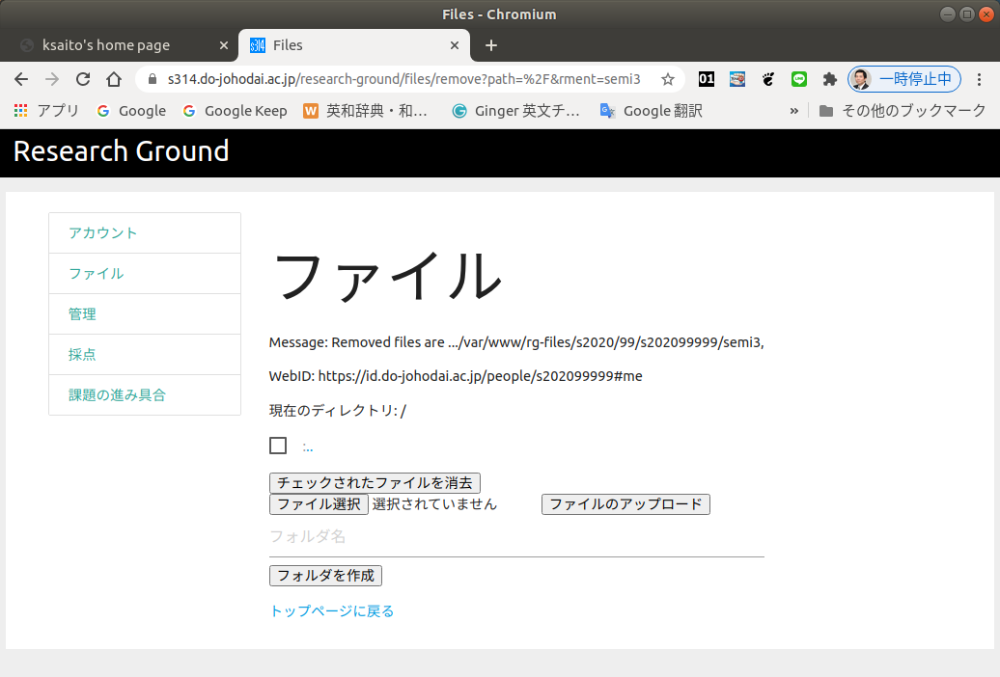
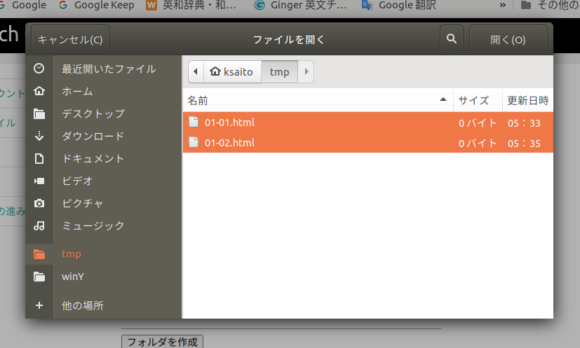

課題の提出
各科目ごとの決まり事
Research Groundにおける課題の提出方法を説明する前に、 各科目ごとに、課題の提出方法に約束があるので、 そちらを先に確認して下さい。
HTMLコーディング演習の決まり事
HTMLコーディング演習の課題は以下の約束事や 注意点を確認して提出しましょう。
- 課題はResearch Groundのファイルアップロードの機能で提出して下さい。
- ファイルをアップロードする場所には決まりがあります。
- HTMLコーディング演習の授業用のフォルダ「html」を作って 全てその中に提出して下さい。
- 課題は、まず大きくchap01からchap06、そして最終課題に 別れています。
- chap03の一部とchap05,chap06は「アドバンス」課題 なので、他の課題を優先して、余裕のある人、上の成績を 狙っている人用の課題になります。
- chap01からchap06ごとに「html」フォルダの 中にさらにchap01、chap02、・・・、chap06のフォルダを 作りチャプターごとに分類して提出して下さい。最終課題のみhtml フォルダに直接提出して下さい。
- 課題ごとに提出するファイル名が指定されています。 一字一句間違えずに(半角の英数字のファイル名ですが 全角にしたりしないように)提出して下さい。
- 1つの課題で提出するファイルが、1つとは限りません。 その課題を表示、動作させるのに必要な物は全て アップロードしましょう。
- 課題を提出し終えたら、提出状況の確認の 方法で、正しくアップロードできたか、提出ファイルが上手く 表示されるか、採点後には点数やコメントを確認して下さい。
HTMLコーディング演習における、Research Groundのファイル提出 場所のは以下のような感じになります。
- 「html」フォルダ(HTMLコーディング演習の授業専用のフォルダ)
- 「chap01」フォルダ(最初の章の内容の課題を提出するフォルダ)
- 「start.html」ファイル(chap01の最初の課題の提出ファイル)
- 「01-01.html」ファイル(chap01の2つ目の課題の提出ファイル)
- ・・・
- 「images」フォルダ(画像を入れておくフォルダ)
- 「e01.png」ファイル(画像ファイル)
- ・・・
- 「chap02」フォルダ(2つ目の章の内容の課題を提出するフォルダ)
- ・・・
- ・・・
- ・・・
- 「chap06」フォルダ(6つ目の章の内容の課題を提出するフォルダ)
- ・・・
- 「index.html」ファイル(最終課題の課題ファイルの一つ)
- finalフォルダに入れるのでは無い点に注意！
- 「style.css」ファイル(最終課題のスタイルシート)
- finalフォルダに入れるのでは無い点に注意！
- 「images」フォルダ(最終課題用の画像を入れておくフォルダ)
- 「gazou.png」ファイル(画像ファイル)
- 「chap01」フォルダ(最初の章の内容の課題を提出するフォルダ)
モバイルアプリ演習の決まり事
モバイルアプリ演習の授業における課題提出の約束事や 注意点を確認して下さい。
- 課題はResearch Groundのファイルアップロードの機能で提出して下さい。
- ファイルをアップロードする場所には決まりがあります。
- モバイルアプリ演習の授業用のフォルダ「map」を作って 全てその中に提出して下さい。
- 第01回から第12回、そして総合課題ごとに「map」フォルダの 中にさらにフォルダを作り回ごとに分類して提出して下さい。
- 課題ごとに提出するファイル名が指定されています。 一字一句間違えずに(半角の英数字のファイル名ですが 全角にしたりしないように)提出して下さい。
- 1つの課題で提出するファイルが、1つとは限りません。 その課題を表示、動作させるのに必要な物は全て アップロードしましょう。
- 課題を提出し終えたら、提出状況の確認の 方法で、正しくアップロードできたか、提出ファイルが上手く 表示されるか、採点後には点数やコメントを確認して下さい。
モバイルアプリ演習における、Research Groundのファイル提出 場所のは以下のような感じになります。
- 「map」フォルダ(モバイルアプリ演習の授業専用のフォルダ)
- 「01」フォルダ(第01回の内容の課題を提出するフォルダ)
- 「01-01.html」ファイル(第01回の最初の課題の提出ファイル)
- 「01-02.html」ファイル(第01回の2つ目の課題の提出ファイル)
- ・・・
- 「02」フォルダ(第02回の内容の課題を提出するフォルダ)
- ・・・
- ・・・
- ・・・
- 「12」フォルダ(第12回の内容の課題を提出するフォルダ)
- ・・・
- 「13」フォルダ(総合課題の課題を提出するフォルダ)
- 「13-01.html」ファイル
- 「images」フォルダ(画像を入れておくフォルダ)
- 「gazou.png」ファイル(画像ファイル)
- 「01」フォルダ(第01回の内容の課題を提出するフォルダ)
ファイルのアップロード方法
ファイルのアップロードはResearch Groundの「ファイル」のページで 行ないます。以下のResearch Groundのトップページから「ファイル」を 選択してページを開いて下さい。もし、ここでログインしていなければ、 自動的にログイン画面に以降するのでログインして下さい。
- Research Groundのトップページ
以下のようなページが表示されるでしょう。

「フォルダ名」の入力欄にフォルダの名前を入れてから「フォルダを作成」 のボタンを押すとフォルダが作成されます。試しにHTMLコーディング演習の 課題を提出するための「html」フォルダを作成してみましょう。
「html」フォルダが作成されたなら「html」のリンクをクリックすることで、 「html」フォルダの中に入ることができます。このフォルダから出たい時は、 「..」と書いてあるリンクをクリックします。さらに「html」フォルダの中に 第01回目の課題を提出するための「chap01」フォルダも作っておくと良いでしょう。
作った課題のファイルをアップロードする時は、まず提出する場所に移動できて いるか確認しましょう。その場所で、「ファイル選択」 のボタンを押します。以下のような画面が表示されるので、ファイルを選択します。 ここで複数のファイルを選択することも可能です。

ファイルが選択できたら「ファイルのアップロード」のボタンを押して 下さい。ただし、フォルダはアップロードできません。フォルダをアップ ロードしたい時は、まずフォルダを作ってその中に入ってからフォルダの 中の物をアップロードして下さい。
もし、間違ったファイルをアップロードしてしまった場合には、ファイルの 左側のチェックボックスを選択してから「チェックを入れたファイルを消去」の ボタンを押して下さい。フォルダも消すことができますが、フォルダを消すには、 事前にフォルダの中のファイルを消しておく必要があります。
もう一度繰り返しますが、課題を提出したら提出状況の確認の 方法で、正しくアップロードできたか、提出ファイルが上手く 表示されるか、採点後には点数やコメントを確認して下さい。